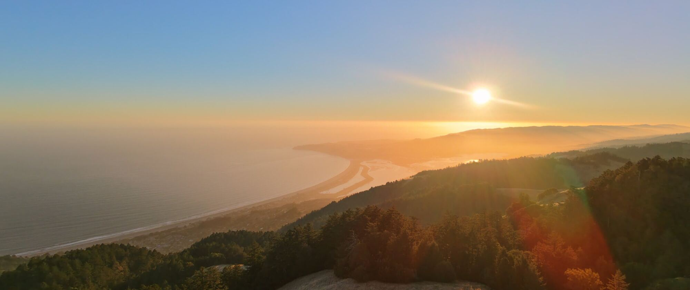

About
Outside the lab I'm usually outdoors: on a trail, in the pool or on a field, or somewhere high up waiting for the sun to go down.

Hiking
My favorite hikes end somewhere high with a long view. Yosemite has given me a few of the best.
Viewpoints
I'll go a long way for a good view, especially at sunset. Lately I've been bringing a drone along too.
Sports
In the pool or on a field. I swim, play flag football, and will try anything once, including skiing (results vary).
Off-road
Where the fun and the engineering overlap: testing day with the Bruin Racing Baja car.
Good company
Most of the best views were better because of who I was with.
Looking for the engineering? See my projects or my experience.